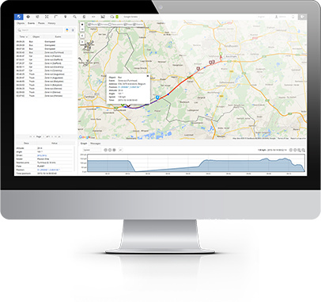
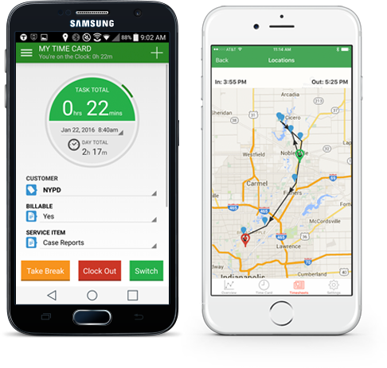
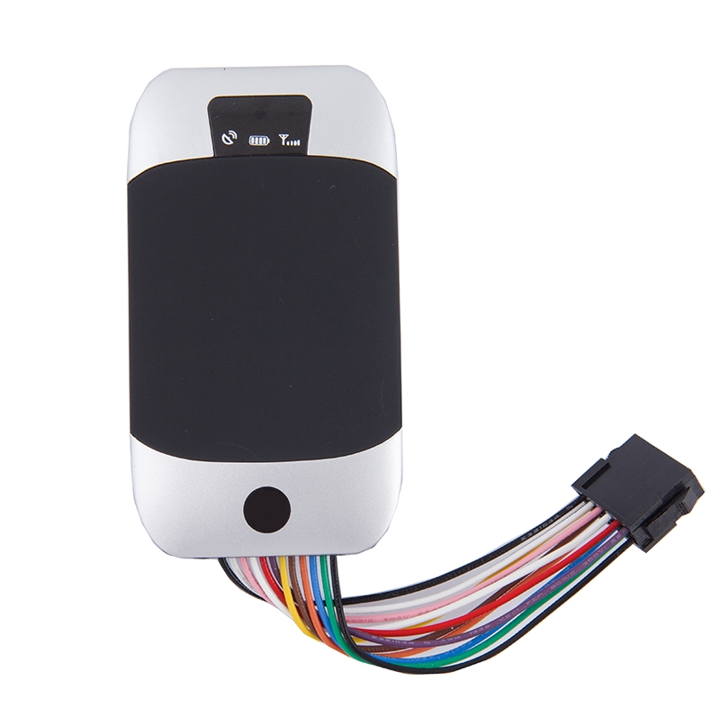

Desktop
Allows you to access your objects anywhere on the planet. Because it uses a Web interface. You can use any browser and any operating system.

Mobile
Allows you to access your objects anywhere on the planet. As we developed the mobile client for the OS Android.
Erlymon Monitor

Overview
Erlymon Monitor is an Android application. It can work with Erlymon/Traccar open source server software.
Sources

Supported devices
You can get support device list Devices page. If your device is not in this list, please create a new issue in bug tracker or simply contact me by email support@erlymon.org. If you send me enough information about your device, I will add its support in the near future.
